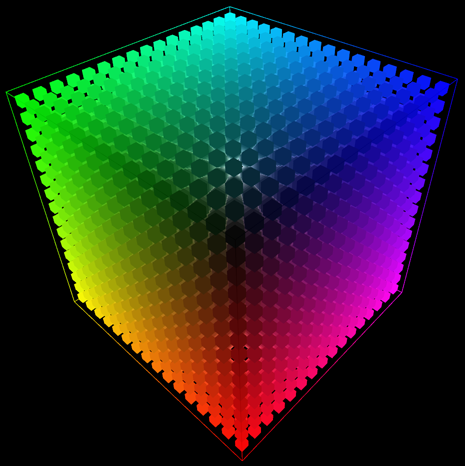
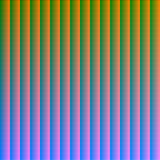
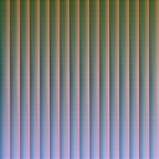
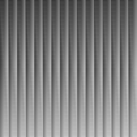

|
Any color correection can be expressed
as a Color Look Up Table or CLUT (some times written as "Color LUT").
This a 3D dimentional table where all colors are represented in color
space. For each color in the color look up table there is a destination
color value that correspondd to what the particulat color becomes when
it is corrected using the CLUT. Thees tables are by nature
3-Dimensional (Red Green and Blue) and therefore special file formats
are used to store them. Hald CLUTs however have been converted to a 2D
space and since tables store colors the CLUT can be be saved as a
image, in any non destructive image format.

+ Concept:
A Hald
CLUT is an image that has a specific color patter on it. In this
pattern all colors in color space are represented. A application that
uses the HALD CLUT image to color correct a image, takes a source image
color and looks it up in the color pattern of the HALD CLUT, and the
color it finds in that place is the corrected color that should replace
the source color in the destination image. If the color doesnt exist in
the CLUT one can look up several colors and interpolate betwean them.
This simple prosediure has some very elegant propertys:
You can store any color correction.
Suported Buy multiple applications.
By use of interpolation to save size and presission.
Hardware suported.
You can have multiple sizes of CLUTs.
Uses file formats that are well known and documented.

A identity Hald Clut Click for full size
+ Creating Hald Cluts:
In
order to Create a CLUT you can either generate it using a custom
program, or you can take an identity clut and color correct it in order
to generate color correction CLUT. An identity CLUT is a CLUT that
doesnt affect the image it is applyed to.
The
great thing about Hald CLUTs is that you can use any color correcting
appliaction to create them. For example if you start up an application
like photoshop and use it to color correct an image, you can take the
same color correction settings and correct an identity CLUT. The
correction then gets embedded on to that CLUT. The CLUT can then be
used to correct any image.
Original image
|
Identity Hald CLUT
|
Corrected Image
|

Same correctinon applyed to CLUT
|
Original image corrected using corrected CLUT, Identical to corrected image

Other image corrected using the same CLUT
+ Manipulating CLUTS:
Since
cluts are simple images you can use any image manipulation application
to presses them. For instance you can blend betwean two different cluts
in order to create a color correction that avrages two different looks.
Identity Hald CLUT
|
Image corrected using identity clut is unchanged
|

Nonocrome CLUT
|
Monocrome CLUT applyed to image
|
CLUT created by avrageing Monocrome and Identity CLUT
|
CLUT applyed to image creates a desaturated effect
|
If you have several CLUT that you would like to apply, you can merge
CLUTSs simply by correcting a CLUT with an other CLUT. The new CLUT
will then contain both corrections and any image corrected using this
CLUT will get the same treatment as if corrected by the two original
CLUTs.
+ Programming CLUTs:
It is also very easy to program you own color corrections to create
custom functions. Often it is very use full to programm a custom efect
and then tweek the correction in a color correction application to get
the special look you are after. Included in the files are varius
example of programs that creats custom color corrections. This sample
code can easely be modifyed to create you own looks.
+ File Formats:
Any Image format or bit deapth can be used to store But a Hald CLUT
should never be stored using a destructive image format such as JPEG,
since it can create artifacts. Thees artifacts may be very severe since
the JPEG algorithem is not designed to compress CLUTs. How ever there
are other efective ways to compress a Hald CLUT. Using a 4096 by 4096
identity CLUT It will take up roughly 50Mb in a raw file format such as
Targa, Compressed using ZIP it will come down ot 36 MB, but RAR
compression will render a file size of only 124Kb. With the PNG file
format you can also get drastic compression down to 131Kb. We strongly
recomend the PNG file format if size is a factor. Other file formats
that may be useful are RGBe and OpenEXR for High Dynamic Range use.
+ Image Levels:
A
color look uptable can have different dencity. Most often you dont need
to represent every possible color in color space but instead you can
interpolate the color with out any vissable artifacts. Therefore the
Hald CLUT suport multiple different sizes. The larger the image the
larger the presision, and the more memory is used. A clut can therfor
be compute in a numbre of levels from 2 and up. Any implementation that
suports Hald Cluts must be able to handle at least up to level 16. To
compute the size of a clut of a specific Level one takes the level to
the power of three. All Hald Cluts must always be square. In order to
find out what level a clut has been encoded to you simply take the size
of the image and compute the cubicrot. In order to comput how many
colors for each component can be stored in the CLUT you take the level
to the power of two. Using level 4 (64 * 64 size) or 8 (512 * 512
size)is recomended using 8 bit per chanel or lower images. Level 16 is
recomended for advanced 8 corrections and 10, 12 and 16 bit images.
+ Encoding:
The concoding is very simple. The encoding encodes to a continius
buffer as if the buffer was 3 Dimentional. where width is red, height
is green and depth is blue. The first pixel is in the upper left,
closer corner starting at black and the last pixel is in the lower
right deep corner. (this means that in terms of scanlines of a tv or
monitor, the image is right, where as in a cordinate system, or OpenGL
Texture it is upside down)
Here is a typical example of a implementation on a identity CLUT generator.
cube_size = level * level;
image_size = level * level * level;
data = p = malloc((sizeof *data) * image_size * image_size * 3);
for(blue = 0; blue < cube_size; blue++)
{
for(green = 0; green < cube_size; green++)
{
for(red = 0; red < cube_size; red++)
{
*p++ = (float)red / (float)(cube_size - 1);
*p++ = (float)green / (float)(cube_size - 1);
*p++ = (float)blue / (float)(cube_size - 1);
}
}
}
Modern
Graphics hardware is very capable of computing this color correction in
hardware. The CLUT is then encoded in to a 3D texture that is applyed
to a image in a shader program. Using OpenGLs Shading Language the
pixel shader would look like this:
/* Fragment shader for color correction */
uniform sampler2D image;
uniform sampler3D clut;
void main()
{
vec4 color;
/* reading out a pixel */
color = texture2D(image, gl_TexCoord[0].st);
/* corecting the color using CLUT */
color = texture3D(clut, color.rgb);
gl_FragColor = color;
}
+ Download:
I have some sample Hald CLUTs and some sample applications for
creating identity CLUTs, and correcting images with them. The archive
also contains source code and a gallery of Hald CLUTs. find the files here.
| {kind=link}